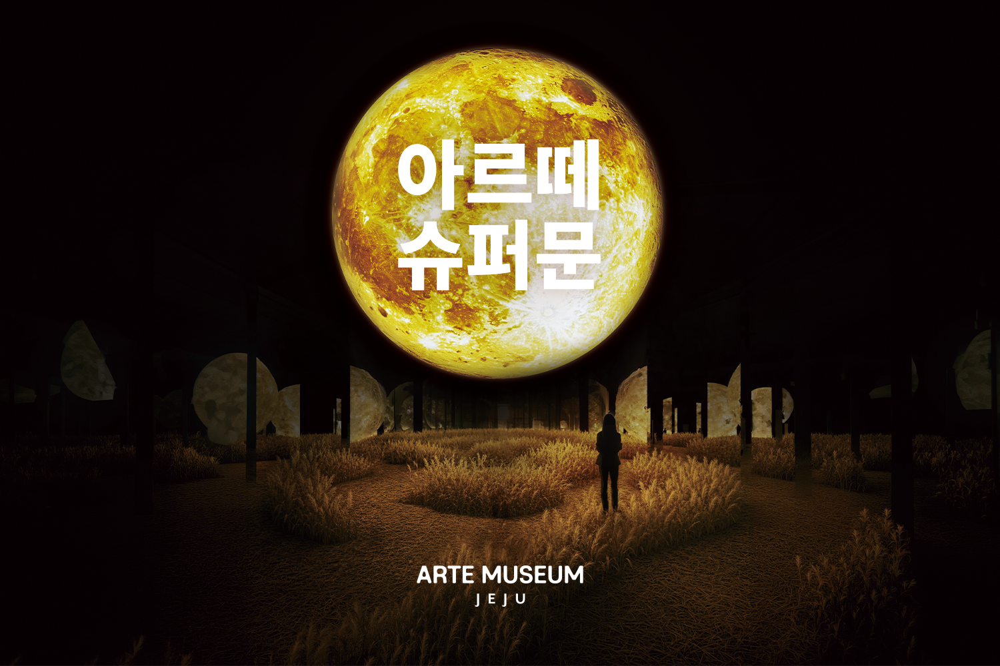

Arte Museum Jeju: Step Inside a World of Light, Color, and Sound
At a glance: Arte Museum Jeju is an indoor immersive-media-art attraction in Aewol, on Jeju’s northwest coast. Large-scale projections, reflective surfaces, and sound turn the exhibition spaces into vivid, shifting scenes. It’s a good option for art-curious visitors, families, and anyone looking for a weatherproof change of pace from Jeju’s coastal scenery.
Address: 478 Eorimbi-ro, Aewol-eup, Jeju-si, Jeju-do, South Korea
Google Maps rating: 4.4/5 from 6,874 reviews
What is Arte Museum Jeju?
Arte Museum Jeju is a digital-art exhibition where light, imagery, and sound shape the visitor experience. Rather than moving through a collection of framed works, you enter rooms designed around large-scale visual scenes. Projections spread across walls and other surfaces, while changing colors and atmospheric audio create an enveloping environment.
The result is part art exhibition and part sensory experience. Some spaces invite you to pause and take in the scene; others are especially striking when you move through them and watch the images shift around you. The visual scale makes the museum easy to enjoy even if you don’t usually visit galleries, though visitors who are interested in digital media and installation art may find more to consider in how the rooms use space, reflection, and sound.
Arte Museum is located in Aewol, an area known to many visitors for its northwest-coast scenery. The museum offers a distinctly different kind of outing: indoors, carefully staged, and focused on visual atmosphere rather than Jeju’s landscapes themselves.
What to expect inside
Expect a sequence of immersive rooms rather than a traditional route through object displays. The scale and lighting are part of the artwork, so the experience can feel quite different from one room to the next. Reflections and projected imagery may make a space appear larger or more layered than it is, and sound contributes to the mood.
This makes the museum popular for photography, but it is worth allowing time to look around before reaching for your phone. A quick picture can capture a color or composition; it may not convey the feeling of standing inside a room as its imagery changes. If you are visiting with children, the strong visuals can be engaging, but keep younger visitors close in dimly lit spaces and be considerate of other people trying to view or photograph the installations.
Exhibition details and visitor policies can change. Check the official website before your visit for current information about what is on display and any rules that may affect your plans. In particular, follow signs and staff guidance on photography and touching the installations.
Planning your visit
Arte Museum Jeju works well as a rainy-day plan or as a break from outdoor sightseeing. It can also fit into a broader day exploring Aewol and the northwest of the island. Because the museum is an indoor attraction with multiple visual environments, avoid scheduling it as a rushed stop between tightly timed plans; giving yourself unhurried time makes it easier to experience each space.
Before setting out, confirm current admission information and operating details through the official website. This article does not list ticket prices or hours because those details can change. If you are travelling during a busy period, checking the museum’s own guidance in advance is especially sensible.
The address is 478 Eorimbi-ro, Aewol-eup, Jeju-si. Use the Google Maps link below to navigate and confirm the route from your starting point. If you are relying on public transport, check a current route planner for the day and time of your trip rather than assuming that a particular connection or schedule will suit you.
Who will enjoy it most?
Arte Museum Jeju is a strong choice for visitors who enjoy striking visual environments, contemporary digital art, and photography. It is also an appealing indoor activity for families and groups with mixed interests: you don’t need specialist art knowledge to respond to the scale, color, and sound.
It may be less suited to someone seeking a quiet, text-heavy museum visit or a close-up look at traditional artworks. The emphasis here is on the experience of the installations. Visitors who are sensitive to darkness, intense colors, or immersive sound may want to take the spaces at their own pace and step out of a room if they need a break.
Good to know
- Check before you go: Confirm current hours, admission details, exhibition information, and visitor policies on the official website.
- Plan for an indoor visit: The museum is a useful alternative when weather makes outdoor plans less appealing.
- Take your time: The visual scenes are designed to be experienced in the rooms, not only through a camera screen.
- Be mindful of other visitors: Leave space for people to view the installations, and follow posted guidance about photography and interaction.
- Verify navigation: Use the linked map to check the location and plan your route from wherever you are staying.
- Review score: Google Maps lists Arte Museum Jeju at 4.4/5, based on 6,874 reviews. Ratings and review totals can change.
Useful links
FAQ
Is Arte Museum Jeju suitable for children?
The immersive visuals can appeal to children, but some rooms are dim and visually intense. Keep younger visitors close and follow the museum’s on-site guidance.
Is it a good place to visit on a rainy day?
Yes. It is an indoor attraction, making it a useful option when outdoor sightseeing is less comfortable. Check current visitor information before travelling.
Do I need to book tickets in advance?
Booking requirements can change, so check the official website for current ticket information and guidance before your visit.